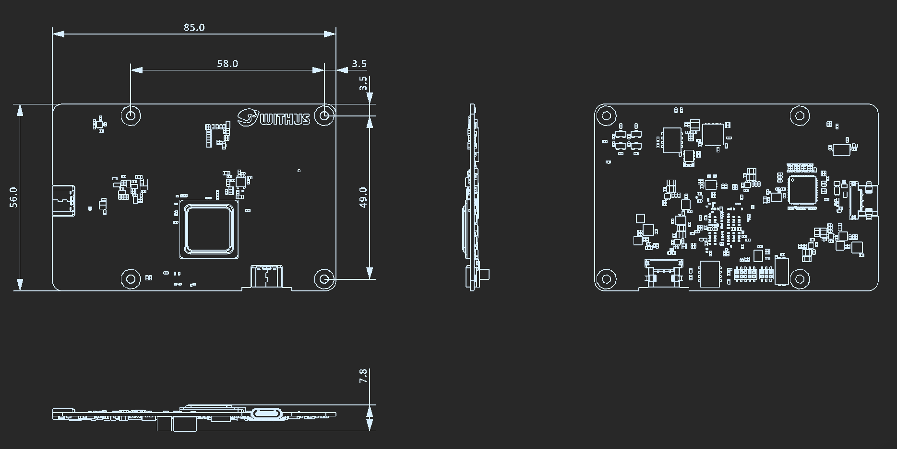

1. ZAiV-AHU
1.1. 개요
ZAiV-AHU에 대한 문서입니다.
ZAiV-AHU는 USB Type-C 3.2 Interface 버전의 고성능 Edge AI Accelerator 보드입니다.
최대 26 TOPS(Tera-Operations Per Second)의 고성능을 갖춘 Hailo-8™ 엣지 프로세서가 탑재되어 있습니다.
다른 엣지 프로세서에 비해 성능은 높지만 크기가 작고 작동 온도가 낮은 것이 큰 장점입니다.
1.2. Specification
- Processor: Hailo-8™ Edge Processor
- Memory: Integreated Memory
- TOPS: 26
- Input Power: DC 5V/3A
- Connectivity
- USB Type-C
- Power & Data(USB3.2 Gen1 x1 (5Gbps))
- Auxiliary Power
- USB Type-C
- Operation Temperature: 0℃ ~ 70℃
1.3. 3. Physical Specification
